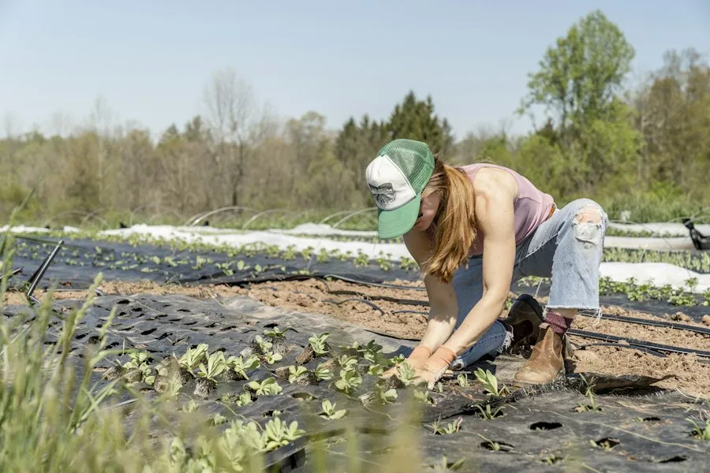

Precision Agtech & Data-Driven Farming
Transforming unpredictable field variables into actionable real-time insights with LoRaWAN wireless ground sensors, aerial drone imaging, and predictive plant biology.
Real-Time Subsoil Telemetry Down To 60cm Depths
Stackly deploys solar-charged wireless probe clusters across agricultural parcels. Every 15 minutes, probes measure volumetric water content, electrical conductivity (salinity), and nitrogen-phosphorus-potassium ionic mobility across three root depth strata (15cm, 30cm, 60cm).
Data syncs seamlessly to the Farm Manager cloud dashboard, eliminating over-watering and allowing targeted biological fertigation right when plants demand it most.
LoRaWAN solar mesh network.
Targeted water & bio-inputs.

Autonomous Multispectral Drone Crop Scouting
Walking thousands of acres to spot pest infestations or fungal blight manually is impossible. Stackly’s autonomous drone fleet maps 500 acres per hour in high-resolution RedEdge and Near-Infrared (NIR) spectrums.
- ✔ Normalized Difference Vegetation Index (NDVI): Detects chlorophyll degradation 7-10 days before visible leaf yellowing.
- ✔ Centimeter-Precision Topography: 3D elevation maps optimize drainage paths and prevent soil erosion gullies.
- ✔ Targeted Bio-Biocontrol Dropping: Releasing beneficial trichogramma wasps directly onto pest focal points.
Integrated Edge Hardware Built For Harsh Outdoor Farm Climates
Engineered to withstand extreme sun, monsoons, and dust with zero maintenance requirements.
Solar Self-Sustaining
Monocrystalline solar collectors with integrated LiFePO4 battery packs operating continuously even during 14 consecutive overcast monsoon days.
Hardware Specs ➔15km LoRaWAN Range
Long-range low-frequency radio propagation penetrates heavy crop canopies, hills, and dense tree lines without costly SIM cards per node.
RF Coverage Map ➔Machine Learning Models
Predictive disease forecasting models trained on 10 years of Tamil Nadu agronomic weather patterns identify powdery mildew windows with 94% accuracy.
Explore Models ➔Everything Accessible In Your Farm Manager Dashboard
All field telemetry flows directly into the dedicated Farm Manager portal. Track daily soil tension, dispatch tractor work orders, view live battery health, and log harvest batch yields without switching between complex third-party tools.
